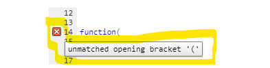

Introducción
Objetivo de este tutorial
El objetivo de este tutorial es que aprendas a generar tu propio tutorial (üòú) interactivo en R usando la paqueter√≠a learnr. Esta paqueter√≠a consta de funciones que permiten modificar un archivo .Rmd para incluir cuestionarios, ejercicios de c√≥digo entre otras cosas.
Esquema de este tutorial
Aquí va el diagrama.
Primeros pasos
Crear un tutorial interactivo
Instalar y cargar learnr
Usa este comando install.packages("learnr") en tu consola de R/RStudio para instalar el paquete learnr.
Ingresa el comando para cargar la paquetería dentro del archivo de tu tutorial.
library(learnr)Crear un tutorial
Opción 1:
Crear un nuevo Rmarkdown:

Seleccionar la plantilla de Interactive tutorial

Opción 2:
- En un archivo Rmarkdown modificar el YAML header para incluir el output que se muestra:
---
title: "Tutorial"
output:
learnr::tutorial:
theme: flatly
highlight: tango
runtime: shiny_prerendered
description: "Esto es un tutorial de learnr para aprender a usar learnr."
---Ejercicios de código
Ejercicios de código
Para hacer interactivo el tutorial se pueden incluir secciones en las que el usuario proporcione código a ejecutar. La opción exercise=TRUE en un chunk permite convertirlo en un ejercicio.
{r ejercicio, exercise=TRUE}
#Aquí puedes ingresar código de R y ejecutarlo.Opciones del chunk
Las opciones de código chunk no se muestran en el tutorial (y en general no se muestran en los Rmd).
Ejemplo:

Veamos para qué sirven estas opciones en la siguiente tabla:
| Opción | Descripción | Resultado |
|---|---|---|
exercise.lines = n |
n puede ser: 1, 2, 3, …. Y ese número será el número de filas de código que se muestren en el tutorial. |  |
exercise.cap |
Título del ejercicio que aparecerá en la esquina superior izquierda. Por default, exercise.cap = "Code" |
 |
exercise.eval |
Por defecto es FALSE lo que implica que el código proporcionado no se evalúa sino hasta que el usuario quiera. |
 |
exercise.timelimit |
Tiempo límite de ejecución del código en segundos. (Si el código tarda en ejecutar más del tiempo límite, aparece un error). No significa que el usuario tenga ese tiempo para completar el código. |
 |
|
NO SABEMOS QUÉ ONDA El paquete |
|
exercise.completion |
Es TRUE por defecto y permite que el usuario vea los posibles parámetros que requiere una función. |
 |
exercise.diagnostics |
Es Poner referencias dentro del tutorial no funciona |
Ve ejemplo en la sección: Ayudar al usuario |
exercise.startover |
Por defecto es TRUE. Indica si queremos que aparezca un botón que permita reiniciar el ejercicio. |
 |
exercise.warn_invisible |
NO SABEMOS cómo se usa ni para qué sirve. | |
exercise.reveal_solution |
Por defecto es A lo mejor necesitas la solución para calificar pero no quieres que el usuario la vea. |
NO SIRVE |
La función tutorial_options() puede usarse para especificar las opciones del chunk para todas los chunks del tutorial.
El código y los resultados de un chunk de ejercicio no estarán disponible para los demás chunks a menos que se especifíque, Una forma de hacer esto es usando la opción exercise.setup="nombre-chunk-a-usar"en el chunk de ejercicio en el que queremos usar el resultado previo. Podemos ir formando una cadena de resultados a usar de esta forma.
Ejercicios con hints y soluciones
Podemos dar hints a un ejercicio usando el sufijo -hint en el nombre del chunk que contiene el hint o mostrar el código de la solución añadiendo -solution al nombre del chunk que contiene la solución.
Por ejemplo, para proporcionar código que de una pista para resolver el ejercicio que tiene nombre de chunk ejercicio1, escribimos la pista en un chunk que tenga nombre ejercicio1-hint. De manera similar, para proporcionar el código de la solución de este ejercicio lo escribimos en un chunk con nombre ejercicio1-solution.
'''{r ejercicio1, exercise=TRUE}
#Aquí va el ejercicio:
# Cambia al color de los puntos a rosa
ggplot(mtcars, aes(x=mpg,y=cyl)) +
geom_point()
'''
'''{r ejercicio1-hint}
#Aquí va el hint para el ejercicio 1
# Usa el parámetro color dentro de geom_point()
'''# Cambia al color de los puntos a rosa
ggplot(mtcars, aes(x=mpg,y=cyl)) +
geom_point()#Usa el parámetro color dentro de geom_point()'''{r ejercicio2, exercise=TRUE}
#Aquí va el ejercicio:
# Cambia al color de los puntos a verde
ggplot(mtcars, aes(x=mpg,y=cyl)) +
geom_point()
'''
'''{r ejercicio2-solution}
#Aquí va la solución del ejercicio 1
ggplot(mtcars, aes(x=mpg,y=cyl)) +
geom_point(color = "green")
'''# Cambia al color de los puntos a verde
ggplot(mtcars, aes(x=mpg,y=cyl)) +
geom_point()ggplot(mtcars, aes(x=mpg,y=cyl)) +
geom_point(color= "green")Al proporcionar hints y también la solución en un ejercicio, ésta aparecerá dentro del apartado de las hints y se mostrará al final.
'''{r ejercicio3, exercise=TRUE}
#Aquí va el ejercicio:
# Cambia al color de los puntos a verde
ggplot(mtcars, aes(x=mpg,y=cyl)) +
geom_point()
'''
'''{r ejercicio3-hint}
#Aquí va el hint
# Usa el parámetro color dentro de geom_point()
'''
'''{r ejercicio3-solution}
#Aquí va la solución del ejercicio 1
ggplot(mtcars, aes(x=mpg,y=cyl)) +
geom_point(color = "green")
'''# Cambia al color de los puntos a verde
ggplot(mtcars, aes(x=mpg,y=cyl)) +
geom_point()# Usa el parámetro color dentro de geom_point()ggplot(mtcars, aes(x=mpg,y=cyl)) +
geom_point(color= "green")Reiniciar un ejercicio
Esto se hace con la opción exercise.star-over en el chunk de código (por defecto es TRUE). El siguiente ejercicio NO se pued reiniciar (es decir exercise.star-over = FALSE)
'''{r ejercicio4, exercise = TRUE, exercise.startover = FALSE}
# Define un vector con los números pares del 0 al 10
# Ejemplo: c(0,,,,)
'''#Define un vector con los números pares del 0 al 10
# Ejemplo: c(0,,,,)Ayudar al usuario (completar código y aviso de fallas)
Por defecto, en cada ejercicio de código se tiene queexercise.completion = TRUE lo cual hace que mientras el usuario escribe una función de R (por ejemplo mean), se muestren los parámetros que requiere esa función (por ejemplo x = , na.rm = ).
#Intenta volver a llenar los argumentos de la función seq para NO ver en marcha exercise.completion (pues pusimos exercise.completion = FALSE)
x <- seq(0,10,2)Por otro lado exercise.diagnostics = TRUE para avisar al usuario cuando cometa un error en el código, por ejemplo function( es un error de codificación porque falta un paréntesis, si se escribe exercise.diagnostics = FALSE no se le dará aviso al usuario que es un error.
exercise.diagnostics = TRUE
exercise.diagnostics = FALSE
# Observa que no aparece del lado izquerdo alguna advertencia de los siguientes errores:
function(
mean(Calificar NO SABEMOS
# Agrega el 30 dentro de sqrt
sqrt()# Agrega el 30 dentro de sqrt
sqrt(30)# Agrega el 30 dentro de sqrt
sqrt(30)Cuestionarios
Preguntas
Además de los ejercicios de código, puedes incluir preguntas de opción múltiple con la siguiente estructura:
Código
{r quiz}
quiz(
question("Aquí escribes la pregunta",
allow_retry = TRUE, #Que lo vuelva a intentar
answer("Opción 1"),
answer("Opción 2"),
answer("Opción correcta", correct = TRUE)
),
question("Pueses incluir mensajes para cada opción y más de una opción correcta.",
allow_retry = TRUE,
answer("Una opción correcta", correct = TRUE,message = "Mensaje adicional"),
answer("Una opción incorrecta", message = "Mensaje adicional"),
answer("Otra opción incorrecta"),
answer("Otra opción correcta", correct = TRUE)
)
)Resultado
Parámetros de question
text = "¿Esta es la pregunta?"El parámetotextcontiene una cadena de caracteres o strings (es decir texto dentro de “comillas”).answer("Esta es la respuesta correcta", correct = TRUE, message = "Aquí le dices al usuario algo bonito por haber acertado ;)")La función answer es un parámetro de question y contiene a su vez los siguentes parámetros:
textparámetro de caracteres que definen una posible respuesta a la preguntacorrectun parámetro boolean(o), es decir, TRUE o FALSE. Por defecto,correct = FALSElo cual indica que esa posible respuesta NO ES correcta.messageparámetro de caracteres para dar un mensaje adicional al usuario sobre la opción de respuesta que eligió.
allow_retryparámetro boolean(o), es decriallow_retry = FALSEoallow_retry = TRUE. Por defecto (es decir, sino se especifica el valor del parámetro)allow_retry = FALSElo cual implica que NO habrá posibilidad de que el usuario intente contestar de nuevo (si es que contestó incorrectamente).correct = "Este mensaje saldrá cuando aciertes en tu respuesta"incorrect = "Este mensaje saldrá cuando NO aciertes en tu respuesta", solo aparecerá siallow_retry = FALSEtry_again = "Este mensaje saldrá cuando NO aciertes en tu respuesta y tengas la opción de intentarlo de nuevo"submit_button = "Mensaje que tiene el botón para confirmar tu respuesta", por defectosubmit_button = "Submit Answer"try_again_button = "Mensaje que tiene el botón para hacer otro intento"(siempre y cuando te equivoques), por defectotry_again_button = "Try Again"random_answer_order = TRUEes un parámetro que permite cambiar el orden de las opciones de respuesta cada que vuleves a realizar el tutorial. Es decir dar click enStart over
question(
text = "¿Cuál parámetro sirve para cambiar el mensaje del botón para intentar de nuevo?",
allow_retry=TRUE,
answer("incorrect",message = "No sabes. Este sirve para dar un mensaje cuando te equivocas"),
answer("submit_button",message = "No sabes. Aquí cambias de mesnaje de confirmación"),
answer("try_again_button", correct = TRUE, message = "¡Maravillos@ estudiante!"),
correct = "¡Sí que has puesto atención!",
try_again = "Vuelve a leer la sección de parámetros",
submit_button = "Yo sé que sé",
try_again_button = "Acuérdate de mí",
random_answer_order = TRUE
)Si queremos hacer múltiples preguntas usamos la función quiz que tenga por parámetros las diferentes quiestions.
quiz(
question(
text = "¿Cuáles son los parámetros de answer?",
answer("text",correct = TRUE),
answer("correct",correct = TRUE),
answer("message", correct = TRUE),
correct = "¡Muy bien!",
submit_button = "Yo sé que sé",
allow_retry = TRUE,
try_again_button = "Intenta de nuevo",
try_again = "A lo mejor no leiste bien la pregunta"
),
question(
text = "¿Qué función se usa para armar un cuestionario?",
allow_retry=TRUE,
answer("quiz", correct = TRUE, message = "Vas por buen camino"),
answer("questions",message = "Esta función no existe en learnr"),
answer("quizes", message = "Esta función no existe en learnr"),
correct = "Sigue adelante",
try_again = "Intenta de nuevo",
submit_button = "Yo sé que sé",
try_again_button = "Date otra oportunidad"
),
caption = "¿Aprendiste?"
)Símbolos matemáticos en las preguntas.
Para poder hacer uso de fórmulas dentro de las preguntas, solo ponemos las fórmulas entre signos de pesos ($) en sintáxis de \(\mathbb{L_aT_ex}\) y dos backslash \\, por ejempo:
question(
text = "¿A qué distribución corresponde la siguiente función de densidad? $f(x) = \\frac{e^{\\frac{-(x-\\mu)^2}{2\\sigma^2}}}{\\sqrt{2\\pi\\sigma^2}}$",
answer("Gaussiana", correct = TRUE),
answer("Normal", correct = TRUE),
#Este parámetro permite al usuario que aun cuando seleccione una respuesta correcta de muchas, ésta se evaluará como correcta (a diferencia de "checkbox" en la que hay que marcar todas las respuestas correctas para que se evalúe como correcta).
type = "radio",
correct = "¡¿Eres Gauss!?",
submit_button = "Confía en tí"
)Incluir elementos externos
Imágenes
Debe crearse una carpeta dentro del directorio del tutorial con el nombre images y guardar en esta las imágenes a incluir y referenciarlas a dicha carpeta. Por ejemplo:

También se pueden incluir imágenes (gifs) de internet:


Videos
Se usa la misma sintáxis que para incluir una imagen de internet pero ahora escribimos el link al video. Solo pueden incluirse links a videos de YouTube o vimeo.
El video se reproducirá dentro del mismo archivo del tutorial (no te redirige a otra página).
Links
Si deseas añadir material de consulta que se encuentra en internet, puedes incluir referencias dentro del tutorial que te lleven a dichas páginas web.
[Texto de la referencia](https://link-a-la-pagina-de-referencia)
Personalizar el diseño del tutorial
Temas
De manera simple, podemos hacer que el tutorial se vea con estilo personal poniendo en el encabezado YAML theme: "default", donde default se puede cambiar por alguno de los temas predetirminados, siguientes:
"default" |
"readable" |
"paper" |
"cerulean" |
"spacelab" |
"sandstone" |
"journal" |
"united" |
"simplex" |
"flatly" |
"cosmo" |
"yeti" |
"darkly" |
"lumen" |
CSS
Si quieres un diseño distinto (y propio) a los temas predeterminados (de la sección anterior) puedes crear un archivo o sección CSS para el tutorial.
Para ello considera el siguiente esquema que ayudará a entender la sintáxis que veremos más adelante:

CSS significa Cascading Style Sheets y es un lenguaje de hojas de estilo en cascada que separa los elementos del tutorial para que puedas modificarlos.
Los comandos principales para hacer estos cambios son:
colorcolor de la letrafont-familytipo de letrafont-sizetamaño de la letrabackground-colorcolor de fondo
Un ejemplo para cambiar el body (ver imagen) es el siguiente:

Nota que el color lo pusimos en formato hexadecimal.
Ejercicio. Completa el siguiente código para cambiar el tipo de letra del nombre de los autores (Arial, Verdana, Helvetica o la que se pueda).
__ {
color: #8A6C0C;
font-family: ______;
font-size: 18px;
}
#Como esta no es sintáxis de R, habrá un error al dar click en "Run Code"Estas especificaones se pueden realizar en un archivo CSS o al inicio del tutorial.
Si lo pones al inicio del tutorial (no en un chunk de código) necesitarás un esquema como este:
<style>
h2 {
color: #6D4101;
font-size: 35px;
}
body {
font-family: Verdana, Helvetica, sans-serif;
font-size: 16;
background-color: #EEF5F9;
color: #000000;
}
</style>Que se pone después del encabezado YAML.
Avance progresivo
Para mostrar los subtópicos del tutorial (aquellos que tienen ###) uno a la vez dando click al botón Continue para avanzar, tenemos dos opciones:
Aplicarlo a todo el documento activando la opción
progressive: trueen el encabezado YAML.--- title: "Hello, Tutorial!" output: learnr::tutorial: progressive: true runtime: shiny_prerendered ---Aplicarlo solo a algunos subtópicos agregando
{data-progressive=TRUE}adelante de cada encabezado de tema (con ## ) que queremos revelar de manera progresiva.## Tema {data-progressive=TRUE}
Una vez activada la opción progressive no podremos avanzar en el tutorial sin contestar los ejercicios de cada sección. Para permitir el avance sin contestar los ejercicios, podemos agregar allow_skip: true en el encabezado YAML.
---
title: "Hello, Tutorial!"
output:
learnr::tutorial:
progressive: true
allow_skip: true
runtime: shiny_prerendered
--- Para solo permitir avanzar en algunas secciones y no en otras sin contestar, podemos especificar{data-allow-skip=TRUE} o {data-allow-skip=FALSE} en cada tema.
Otro formato del tutorial
Es posible incluir ejercicios en otros tipos de documentos además de un tutorial (learnr::tutorial) como dentro de una presentación tipo slidy. Para esto, se debe incluir runtime: shiny_prerendered en el encabezado YAML:
# title: "Habits"
# author: John Doe
# date: March 22, 2005
# output: slidy_presentation
# runtime: shiny_prerenderedlearnr.